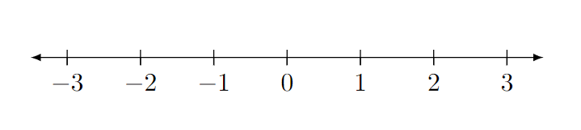

As mentioned in the previous section, are the most fundamental block of mathematics. They represent a quantity, which is really just some amount of something.
Since numbers represent a quantity, they can intuitively be used to count how many of an object. Say you open your fridge and find that you have 452 cartons of apple juice (you must have a substantial fridge and a large apple juice budget), or maybe your look at your desk and count 4 legs, 1 surface, and 3 drawers.
Numbers can be represented in so many ways. Most obvious is that they can be used to count how many items exist. Like 1 water bottle, 15 watermelons, or maybe 350 dollars.
You may notice that each of those quantities also have something called a ; that is, what the number represents. In this case, the units above are water bottles, watermelons, and dollars.
Numbers and units are both important to mathematics, although arguably units are more useful in applied mathematics, since you don't need to have a unit in the most fundamental levels of math.
Numbers can be represented via words ('one', 'two', 'three', ...) or via numerals.
describe the symbols used to represent a number. For instance, represents having a single item, while represents two items. Numerals are how numbers are displayed for reading; in other words, how the quantity is represented. Representation of numbers is crucial. For instance, include what you probably are familiar with:
Extra Credit
Another representation is . This numbering system looks something like this:
The full table of Roman Numeral symbols and their values is shown in the table below. Note that there is no zero.
Symbol Value Roman numerals work by addition or subtraction represented by the order of these symbols. There are all sorts of conventions and rules (for instance, you wouldn't want to represent by ), but they aren't really important to this section. Really, the point is that there are many representations possible. In fact, there are plenty of numeral systems that won't be discussed here, since this book will be using Arabic Numerals anyway.
Numerals represent a particular quantity, and are thus placed in a particular order to denote a specific quantity value. They are read in a particular manner, too.
For instance, represents four tens, and two ones. Or, represents one thousands, two hundreds, three tens, and four ones. To see how this works and why, see Numerical Bases. You may also have partial numbers, which is discussed in Representing Partial Numbers.
Values can be represented on a , which is a means of graphically displaying the relative values of numbers.

Traditionally, a number line flows from to ; in other words, from smallest (left) to largest (right).
Number lines do not have to represent whole numbers; they can instead represent decimals, fractions, mixed numbers, etc. The value just has to be in the correct location (i.e., you would not place 3.5 anywhere except halfway between 3 and 4). Number lines are continuous in that it represents every number.
You can represent partial numbers using the following two representations. (That partial apple juice should come to mind, unless you finished it already...)
The first representation is a which involves a dot (or comma, in some parts in the world) between the ones place and values smaller than it.
The second representation is a , which represents a ratio of two numbers (that is, one number divided by another).
For more on the concept of division, on fractions, or on decimals, see Division. This will provide the necessary context for understanding what a fraction actually represents and why.
Numbers can also be represented by a "base". refers to how many numerals there are. For instance, base-10 includes 10 numerals: 0 through 9. That means there are 10 representations before a new digit must be added to continue counting. That is,
Each place in the base-representation corresponds to a power of that base. For instance, for the number 123, that represents: one 100, 2 ten, and 3 ones. In other words: . This is how every single base-representation works. This is also known as a radix positional numeral system.
Here are some base values you may come across:
Warning
You might be tempted to say that Roman numerals are "base-7", since there are 7 symbols. While true that there are 7 symbols, each one represents a non-sequential values, so this does not apply. You wouldn't count like this: , but instead by (you count sequentially). Roman numerals technically don't have a base at all, since it's not a radix numeral system.
Various number representations are useful for different reasons, for instance, binary and hexadecimal are central to computing.
Note
This book will use base-10 unless noted otherwise.
| Previous | Next |
|---|---|
| 0.0.1: Math | 0.1.3: Characteristics of Numbers |